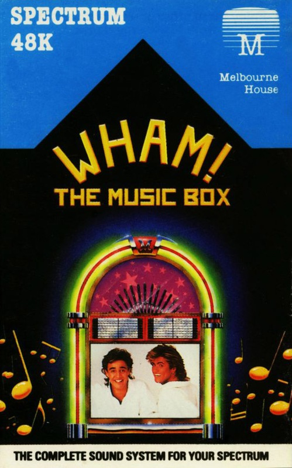
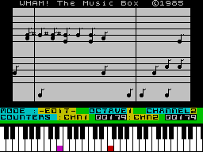

WHAM! The Music Box


{kind=link}

| Publisher: | Melbourne House |
| Price: | £9.95 |
| Year: | 1985 |
| Source: | Sinclair User , Issue 46 |
Wham! The Music Box did not get a proper review in CRASH, so here is a review from Sinclair User issue 46.

We previewed Melbourne House's superb music program last month, and the final version lives up to expectations. Wham! The Music Box is clearly destined to take a place alongside classic utilities such as Tasword 11 or Art Studio.
The screen displays two staves, which scroll sideways, on which you write the music. The bottom two rows of the keyboard act as a piano keyboard, and all the notes are of a single length. That's not a problem as long as you work out the smallest unit you are going to need and take that as the note size. Longer length notes are simply repetitions of the same note.
The program allows you to write two-part music, with a bass line and treble. Four octaves are available, and extra functions include repeating a set pattern, adding in drum sounds more like scratching sandpaper, but that s the Spectrum or you — and defining your own white noise effects by moving a cursor over various waveforms and selecting the one you want.
Since the Spectrum can only handle one note at a time, normally, the two-voice music comes as a shock when you first hear it. If you've got Fairlight or Way of the Exploding Fist, those tunes were written with the same routine. Music can be compiled down to code, stored at any reasonable address, for use in your own programs, and a set of POKEs is given to alter speed, and allow you to play tunes one note at a time so that the music can be interlinked with screen action.
The alleged pop group Wham! has allowed Melbourne House to convert five of their hit singles to the system, and those tunes are recorded after the main program. Whether or not you enjoy Wham! the results certainly show off the power of the program to good advantage.
It is incredibly easy to produce acceptable music from the program. Anybody — absolutely anybody — who writes games or likes mucking about with sound should boogie on down to the stores and buy it.
5 Star Rating